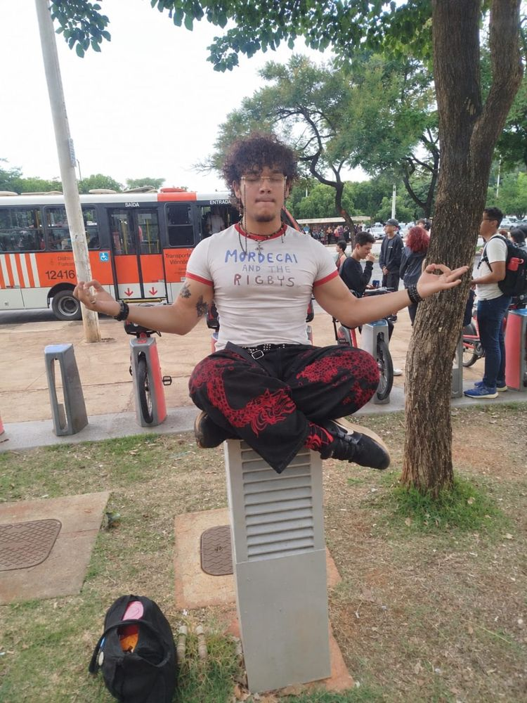

Perícia Forense Computacional
Universidade Cruzeiro do Sul
Olá, eu sou
Arthur Pierre de Aguiar
Estudante de Ciência da Computação
Formado em Perícia Forense Computacional e Animação Digital, hoje pesquiso robótica para cirurgia. Fora do laboratório, vivo em mundos de RPG.
Sou aluno de Ciência da Computação na UDF. Antes disso, me formei em Perícia Forense Computacional e em Animação Digital, ambos na Universidade Cruzeiro do Sul. Hoje faço parte de uma Iniciação Científica voltada ao desenvolvimento robótico no campo da medicina cirúrgica.
Universidade Cruzeiro do Sul
Universidade Cruzeiro do Sul
UDF
Robótica aplicada à medicina cirúrgica
Forense digitalRobótica cirúrgicaAnimaçãoDesenvolvimento web
Uma boa mesa junta narrativa, estratégia e gente imaginando a mesma cena. Gosto de mundos cyberpunk, onde alta tecnologia e rebeldia andam juntas. Daí vem o nome Insurgência.
NarrativaEstratégiaCyberpunkMinha playlist vai do jazz de Persona 5 e do jazz-hop de Nujabes ao indie nacional do Terno Rei, à MPB de Djavan, ao rap de Joey Valence & Brae e ao underground de MF DOOM.
Jazz-hopIndie brasileiroMPBHip-hopTrilhas de jogos
A Rádio Insurgência (botão no canto da tela) toca estas mesmas músicas como fundo.
Meus projetos públicos, carregados direto do GitHub.
Língua Brasileira de Sinais